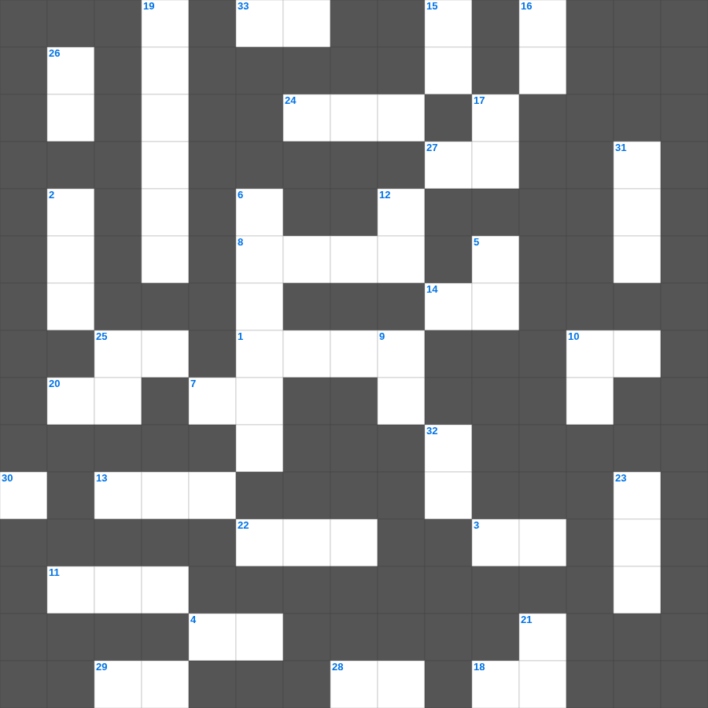

고린도후서 마스터 50
📌 서비스 정의
십자가로세로는 교회 주보와 주일학교에서 사용할 수 있는 성경 기반 가로세로 퍼즐 서비스입니다. 성경 인물, 사건, 핵심 구절을 바탕으로 제작되었습니다. 온라인 풀이 및 인쇄 기능을 제공합니다.
📖 고린도후서란?
고린도후서는 바울이 자신의 사도직과 사역을 변호하며, 고난 속에서도 위로하시는 하나님과 헌금에 대한 가르침을 전하는 개인적이고 감정적인 서신입니다.
📚 고린도후서의 주요 사건·주제
고난 중의 위로에 대한 가르침 · 새 언약의 일꾼으로서의 사역 · 헌금에 대한 권면(고린도후서 8~9장) · 바울의 사도직 변호 · 약함 속의 강함(고린도후서 12장)
오늘은 고린도후서의 주요 내용을 담은 고린도후서 주일학교 퀴즈를 준비했습니다. 총 35개의 힌트가 있으며, 주일학교 교재나 성경공부 자료로 활용하기 좋습니다. 무료로 즐기는 고린도후서 가로세로 퍼즐을 지금 바로 풀어보세요!

📝 가로 힌트
1. 물고기 중 정한 것의 기준(이것과 비늘이 있는 것)
3. 가나안 땅에 들어가면 그 땅의 이것을 다 타파하라
4. 바벨론의 성벽은 넓어도 온전히 이것겠고 그 높은 문들은 불에 탈 것이라
7. 보라 내가 이 성읍을 치료하며 고쳐 낫게 하고 평안과 이것의 풍성함을 그들에게 나타낼 것이며
8. 내가 보니 한 손이 나를 향하여 펴지고 보라 그 안에 이것 두루마리가 있더라
10. 화목제물을 삼 일째까지 남겨두면 이것이 됨
11. 아론과 훌이 모세의 팔을 붙든 곳
13. 너희가 나가서 외양간에서 나온 이것 같이 뛰리라
14. 현숙한 여인의 값은 무엇보다 더하냐
18. 그러나 자족하는 마음이 있으면 이것은 큰 이익이 되느니라
20. 형제 이것하기를 계속하고 나그네 대접하기를 잊지 말라
22. 도마가 부활하신 예수를 보고 한 고백: 나의 주님이시요 나의 이것이시니이다
24. 에스겔이 머리털을 깎아 세 부분으로 나눈 방법 중 하나 (성읍 안에서 이것 함)
25. 하나님은 불의하지 아니하사 너희 행위와 그의 이름을 위하여 나타낸 이것을 잊어버리지 아니하시느니라
27. 성령의 새롭게 하심을 무엇이라고 표현했나: 중생의 이것
28. 너의 사랑하는 자가 남의 사랑하는 자보다 나은 것이 무엇이기에 이같이 우리에게 이것 하는가
29. 한 번 빛을 받고 하늘의 은사를 맛보고 성령에 참여한 바 되고... 타락한 자들은 다시 새롭게 하여 이것하게 할 수 없나니
33. 모든 산 자들 중에 들어 있는 자에게는 이것이 있음은 산 개가 죽은 사자보다 낫기 때문이니라
📝 세로 힌트
2. 길르앗과 에브라임 사람이 '십볼렛' 발음으로 구분한 시험
5. 너는 이웃집에 이것 들어가라 그가 너를 싫어하며 미워할까 두려우니라
6. 성경의 마지막에 등장하는 생명나무 실과
9. 주는 이것하사 너희를 굳건하게 하시고 악한 자에게서 지키시리라
10. 아무것도 없는 자 같으나 모든 것을 이것 자로다
12. 내 사랑하는 자의 목소리로구나 보라 그가 산에서 달리고 작은 산을 이것 넘어오는구나
15. 하나님과 대면하고 내려온 모세의 얼굴에서 난 것
16. 세상의 모든 겸손한 자들아 너희는 여호와를 찾으며 공의와 이것을 구하라
17. 우리가 이것으로 의롭다 하심을 받았으니 우리 주 예수 그리스도로 말미암아 하나님과 화평을 누리자
19. 여호수아가 단을 쌓고 축복과 저주를 낭독한 두 산
21. 우리를 양육하시되 이것하지 않은 것과 이 세상 정욕을 다 버리고
23. 여리고 성을 마지막 날에는 몇 번 돌았는가
25. 석류 꽃이 피었는지 보자 거기에서 내가 내 이것을 네게 주리라
26. 자기의 마음을 제어하지 아니하는 자는 성벽이 없는 이것과 같으니라
30. 너희의 죄가 주홍 같을지라도 이것 같이 희어질 것이요
31. 좋은 이것 한 바구니가 있고 아주 나빠서 먹을 수 없는 나쁜 이것 한 바구니가 있더라
32. 바울이 디모데를 부르는 칭호: 믿음 안에서 참 이것 된 디모데
🧩 이 퍼즐에서 배우는 내용
이 퍼즐은 고린도후서 마스터 50의 핵심 단어와 개념을 자연스럽게 복습할 수 있도록 구성되었습니다. 주일학교 수업이나 개인 성경공부에서 학습 내용을 점검하는 용도로 바로 활용할 수 있습니다.
🧑🏫 교회 교육 자료 활용
이 퍼즐은 주일학교 교재 추천 자료로 활용할 수 있고, 주일학교 주보에 넣기 좋은 분량으로 구성되어 있습니다. 수업용 주일학교 교안에 활동지로 붙이거나, 예배 후 복습용 주일학교 공과교재로 바로 사용할 수 있습니다.
🏷️ 키워드
고린도후서 주일학교 퀴즈, 고린도후서, 십자가로세로, 성경퀴즈, 말씀퀴즈, 가로세로퍼즐, 주일학교 교재 추천, 주일학교 주보, 주일학교 교안, 주일학교 공과교재